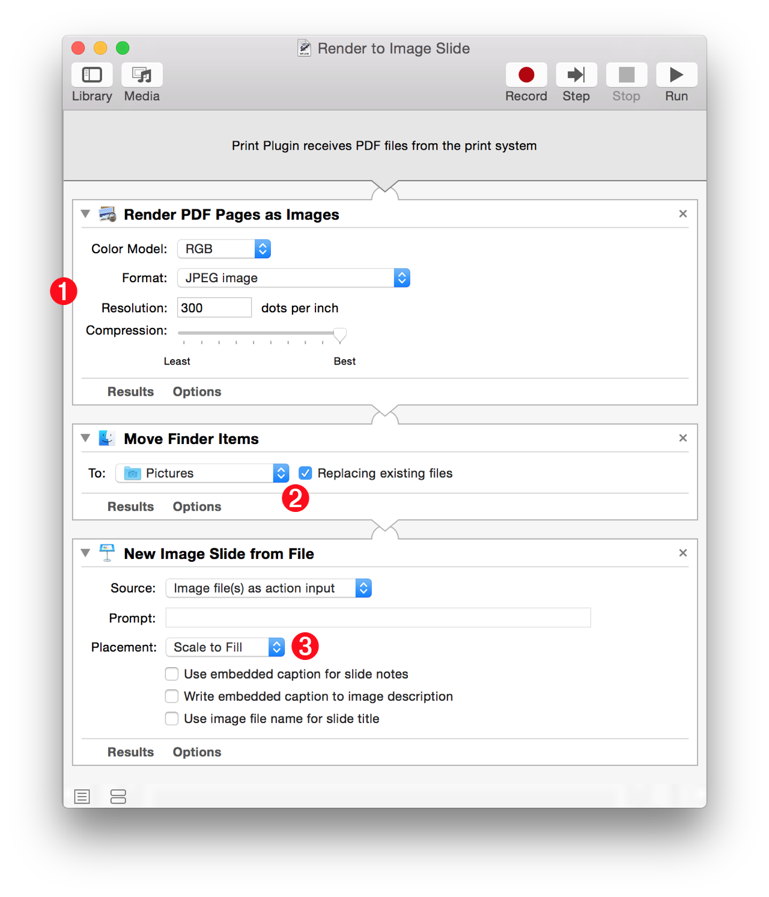

The “Render to Image Slide” Automator workflow is a PDF print plugin for printing documents from any application to a new slide in Keynote.
Let’s say you’re creating a presentation about Washington D.C. and you want to include a slide with a 3-D map highlighting famous historical landmarks, such as the Capitol Building, the White House, the Washington Monument, and the Jefferson and Lincoln Memorials.
Wouldn’t it be useful to be able to print such a map from the Maps application directly to your presentation? Here’s how to create an Automator workflow to make this possible.
Creating the PDF Print Plugin
In Automator, create a new workflow and choose the PDF Print Plugin option from the template sheet, and add the following actions to the new workflow.
1 Render PDF Pages as Images • Add this action that renders the PDF file generated by the print architecture into a high-resolution image file. In the action view, set the image format to JPEG, the resolution to between 300 to 600 DPI, and the compression level to deliver the best quality image.

2 Move Finder Items • The result of the previous action is a JPEG image file placed within a special system folder used to temporarily contain items that are being used by the OS and applications. The next step is to move the created image to a user-accessible location like the Pictures folder. Add the Move Finder Items action to the workflow and set its destination folder to be the Pictures folder, and to replace any files that are named the same as the created image.
3 New Image Slide from File • Add this action to the end of the workflow and set its placement option to Scale to Fill. This action will create a new slide containing the rendered image, in the frontmost Keynote presentation.
Save and name the workflow. It will now be available from the PDF popup menu within any application’s print dialog.
DOWNLOAD an installer for the example workflow that will install the PDF print plugin into the PDF Services folder. Once installed, the workflow can be executed from the PDF popup menu within the standard print dialog.